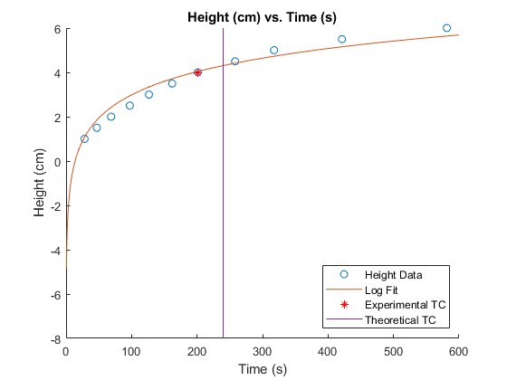

Lab 3 - Water System
3/25/21 Michael White Section 3 / Online
close all; clear all; clc; % Import data table for voltage wData = readtable('waterData.xlsx'); % Input/calculate parameters related to time constant value g = 9.81; %m/s^2 diameter = 0.0635; %m A = pi/4*diameter^2; %m^2 R = 743000; %1/ms TheoTau = A*R/g; % Pull logarithmic fit function from excel syms logFit(x); logFit(x) = 1.5067*log(x)-3.9509; ExpTau(2) = 0.632*6.4; %Found this to be roughly the max height experimentally % Find the closest point to the calculated time constant value absDiffList = abs(wData.Height-ExpTau(2)); ExpTau = ... [wData.TimeElapsed(absDiffList == min(absDiffList)),... wData.Height(absDiffList == min(absDiffList))]; % Plot figure of data with fit line and time constant point. figure; hold on; scatter(wData.TimeElapsed,wData.Height); fplot(logFit(x)); scatter(ExpTau(1),ExpTau(2),'*r'); plot([TheoTau,TheoTau],[-8,6]); % Cleanup graph and add legend, title, and labels title('Height (cm) vs. Time (s)'); legend({'Height Data','Log Fit','Experimental TC','Theoretical TC'},'Location','southeast'); xlabel('Time (s)'); ylabel('Height (cm)'); % Display results to command window disp('Theoretical TC =');disp(TheoTau); disp('Experimental TC =');disp(ExpTau(1));
Theoretical TC = 239.8596 Experimental TC = 201.2200